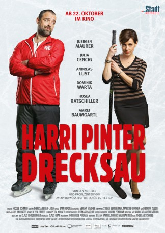

#11548 Harrinator
Alternativ: Harri Pinter, Drecksau
 
 IMDB-Wertung: 6.5 / 10
IMDB-Wertung: 6.5 / 10  Metascore: 0
Metascore: 0 
Everyone knows the "Harrinator". A tough ice-hockey crack, famously witty, irresistible with the ladies, as cool as they come. At least that is what he thinks. Everyone else would disagree. His hockey career has been over for years. His hairline is receding as fast as his gut is growing. And to top it off, his long-time girl-friend Ina kicks him out of their apartment. Harri is in a deep slump.
Jahr: 2017
Dauer: 88 Minuten
FSK:
Land: Österreich Studio: ARTETonspuren:
Untertitel:
Auflösung: 720p (1280x720) Größe: 2385 MB
Genre: Komödie
Regisseur: Andreas Schmied
Drehbuch: Stefan Hafner, Thomas Weingartner
Soundtrack: Stefan Bernheimer, Markus Gartner
Darsteller:
- Jürgen Maurer als Harri Pinter
 Andreas Lust als Norbert Flasch
Andreas Lust als Norbert Flasch Tim Williams als Ken Meyers
Tim Williams als Ken Meyers- Julia Cencig als Ines Pontiller
- Dominik Warta als Herwig Pansi
- Hosea Ratschiller als Dörki Potschevaunig
- Amrei Baumgartl als Miriam Meyers
- Zoe Tatschl als Kapitänin Lisa Pessiak
- Marco Kasper als Robert Begusch
- Maximilian Lenz als Luka Sereinig
- Peter Strauß als Vorstandsvorsitzender
- Herbert Brunner als Hausmeister
- Philine Schmölzer als Michi Ebner
- Zeynep Buyrac als Neda Bostak
- Robert Putzinger als Fahrschulprüfer
- Susanne Kubelka als Kiki Stingl
- Dagmar Sickl als Elisabeth Sereinig
Datei: X:\2017(G-M)\Harrinator (2017, FSK, 1280x720).mkv seit 24.07.2019
Festplatte: HD 2017(A-Z)-2018(A-F)
 Es gibt insgesamt 148 Filme in der Gruppe '2017(G-M)'
Es gibt insgesamt 148 Filme in der Gruppe '2017(G-M)'